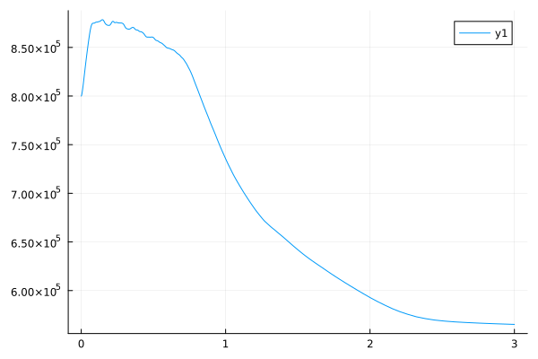

CompressenAirSystem
3 steps to use CompressenAirSystem System:
- Define components
- Connect components
- Solve
Example 1: A Integrated System
The system contains 4 types of components.
- Compressor
- Purifier
- Pipe
- Airtank

using Ai4EComponentLib
using Ai4EComponentLib.CompressedAirSystem
using ModelingToolkit, DifferentialEquations
n0 = 4000
h_polCoff = [-91.7802, 1058.2670, 3213.1520]
etaCoff = [-0.0181, 0.2880, -0.2557]
surgeCoff = [-2.950e-7, 4.8009, -5.1678]
chokeCoff = [1.1054e-6, 8.6274, 20.7626]
f=0.05 # Friction resistance coefficient
n = 15 # Number of nodes
D = 0.4 # Pipe diameter
L = 20 # length
R = 3000 # Resistance coefficient
T = 300 # Temperature
qm0 = 10 * ones(n) # Initial mass flow rate
p0 = 10e5 * ones(n) # initial pressure
n2 = 40 # Number of nodes
D2 = 0.4 # Pipe diameter
L2 = 200 # length
R2 = 3000 # Resistance coefficient
T2 = 300 # Temperature
qm02 = 10 * ones(n2) # Initial mass flow rate
p02 = range(10e5,8e5,length=n2) #initial pressure
inletBoundary = Dict(
"p" => 1.0e5,
"T" => 300,
)
outletBoundary = Dict(
"T" => 300,
"p" => 4e5,
)
@named cp11 = VarySpeedCompressor(
n0=n0,
h_polCoff=h_polCoff,
etaCoff=etaCoff,
surgeCoff=surgeCoff,
chokeCoff=chokeCoff
)
@named cp21 = VarySpeedCompressor(
n0=n0,
h_polCoff=h_polCoff,
etaCoff=etaCoff,
surgeCoff=surgeCoff,
chokeCoff=chokeCoff
)
@named cp31 = VarySpeedCompressor(
n0=n0,
h_polCoff=h_polCoff,
etaCoff=etaCoff,
surgeCoff=surgeCoff,
chokeCoff=chokeCoff
)
@named cp41 = VarySpeedCompressor(
n0=n0,
h_polCoff=h_polCoff,
etaCoff=etaCoff,
surgeCoff=surgeCoff,
chokeCoff=chokeCoff
)
@named cp12 = VarySpeedCompressor(
n0=n0,
h_polCoff=h_polCoff,
etaCoff=etaCoff,
surgeCoff=surgeCoff,
chokeCoff=chokeCoff
)
@named cp22 = VarySpeedCompressor(
n0=n0,
h_polCoff=h_polCoff,
etaCoff=etaCoff,
surgeCoff=surgeCoff,
chokeCoff=chokeCoff
)
@named cp32 = VarySpeedCompressor(
n0=n0,
h_polCoff=h_polCoff,
etaCoff=etaCoff,
surgeCoff=surgeCoff,
chokeCoff=chokeCoff
)
@named cp42 = VarySpeedCompressor(
n0=n0,
h_polCoff=h_polCoff,
etaCoff=etaCoff,
surgeCoff=surgeCoff,
chokeCoff=chokeCoff
)
@named cp13 = VarySpeedCompressor(
n0=n0,
h_polCoff=h_polCoff,
etaCoff=etaCoff,
surgeCoff=surgeCoff,
chokeCoff=chokeCoff
)
@named cp23 = VarySpeedCompressor(
n0=n0,
h_polCoff=h_polCoff,
etaCoff=etaCoff,
surgeCoff=surgeCoff,
chokeCoff=chokeCoff
)
@named cp33 = VarySpeedCompressor(
n0=n0,
h_polCoff=h_polCoff,
etaCoff=etaCoff,
surgeCoff=surgeCoff,
chokeCoff=chokeCoff
)
@named cp43 = VarySpeedCompressor(
n0=n0,
h_polCoff=h_polCoff,
etaCoff=etaCoff,
surgeCoff=surgeCoff,
chokeCoff=chokeCoff
)
@named purifier11=Purifier(c=1,Δp=300,T=330)
@named purifier21=Purifier(c=1,Δp=400,T=330)
@named purifier31=Purifier(c=1,Δp=200,T=330)
@named purifier41=Purifier(c=1,Δp=600,T=330)
@named purifier12=Purifier(c=1,Δp=300,T=330)
@named purifier22=Purifier(c=1,Δp=400,T=330)
@named purifier32=Purifier(c=1,Δp=200,T=330)
@named purifier42=Purifier(c=1,Δp=600,T=330)
@named purifier13=Purifier(c=0.99,Δp=300,T=300)
@named purifier23=Purifier(c=0.98,Δp=400,T=300)
@named purifier33=Purifier(c=0.995,Δp=200,T=300)
@named purifier43=Purifier(c=0.97,Δp=600,T=300)
@named transPipe11 = TransitionPipe(n=n, D=D, L=L, T=T, p0=p0, qm0=qm0, f=f)
@named transPipe12 = TransitionPipe(n=n, D=D, L=L, T=T, p0=p0, qm0=qm0, f=f)
@named transPipe13 = TransitionPipe(n=n, D=D, L=L, T=T, p0=p0, qm0=qm0, f=f)
@named transPipe14 = TransitionPipe(n=n, D=D, L=L, T=T, p0=p0, qm0=qm0, f=f)
@named airTank=AirStroageTank(V=40,p0=8e5)
@named transPipe21 = TransitionPipe(n=n2, D=D2, L=L2, T=T2, p0=p02, qm0=qm02, f=f)
@named transPipe22 = TransitionPipe(n=n2, D=D2*2, L=L2, T=T2, p0=p02, qm0=qm02, f=f)
@named inletSource = Source(boundary=inletBoundary)
@named outletSource = Source(boundary=outletBoundary)
addEq1 = [
connect(cp11.inlet,cp21.inlet,cp31.inlet,cp41.inlet,inletSource.source)
connect(cp11.outlet,purifier11.inlet)
connect(cp21.outlet,purifier21.inlet)
connect(cp31.outlet,purifier31.inlet)
connect(cp41.outlet,purifier41.inlet)
connect(cp12.inlet,purifier11.outlet)
connect(cp22.inlet,purifier21.outlet)
connect(cp32.inlet,purifier31.outlet)
connect(cp42.inlet,purifier41.outlet)
connect(cp12.outlet,purifier12.inlet)
connect(cp22.outlet,purifier22.inlet)
connect(cp32.outlet,purifier32.inlet)
connect(cp42.outlet,purifier42.inlet)
connect(purifier12.outlet,cp13.inlet)
connect(purifier22.outlet,cp23.inlet)
connect(purifier32.outlet,cp33.inlet)
connect(purifier42.outlet,cp43.inlet)
connect(cp13.outlet,purifier13.inlet)
connect(cp23.outlet,purifier23.inlet)
connect(cp33.outlet,purifier33.inlet)
connect(cp43.outlet,purifier43.inlet)
connect(transPipe11.inlet,purifier13.outlet)
connect(transPipe12.inlet,purifier23.outlet)
connect(transPipe13.inlet,purifier33.outlet)
connect(transPipe14.inlet,purifier43.outlet)
connect(transPipe11.outlet,transPipe12.outlet,transPipe13.outlet,transPipe14.outlet,airTank.inlet)
connect(transPipe21.inlet, transPipe22.inlet, airTank.outlet)
connect(transPipe21.outlet,transPipe22.outlet,outletSource.source)
cp11.n~4000
cp21.n~3980
cp31.n~4020
cp41.n~4000
cp12.n~4300
cp22.n~4280
cp32.n~4320
cp42.n~4300
cp13.n~4800
cp23.n~4780
cp33.n~4820
cp43.n~4800
]
@named addEq1_model = ODESystem(addEq1, t)
@named cp_model = compose(addEq1_model,
cp11, cp21, cp31 ,cp41,cp12, cp22, cp32 ,cp42,cp13, cp23, cp33 ,cp43,
purifier11, purifier21,purifier31,purifier41,
purifier12, purifier22,purifier32,purifier42,
purifier13, purifier23,purifier33,purifier43,
transPipe11,transPipe12,transPipe13,transPipe14,
transPipe21,transPipe22,
airTank,
inletSource, outletSource
)
sys1 = structural_simplify(cp_model)
prob1 = ODEProblem(sys1, [], (0, 3))
sol1 = solve(prob1, Rodas4())
sol1[airTank.p]1-element Vector{Float64}:
800000.0Then we can generate the pressure diagram of airTank.
using Plots
plot(sol1.t, sol1[airTank.p])